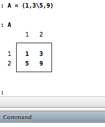
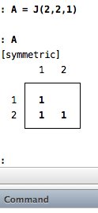

Mata
Introduction
Mata is a high performance matrix language embedded within Stata[1]. It provides a number of matrix operations that MATLAB users might be familiar with. There are several tutorials[2][3][4][5] available online, but for a comprehensive review of Mata, I would recommend StataCorp’s own Mata documentation6 and Kit Baum’s book7. This page is a collection of Mata miscellanny that I find useful. I hope that it turns out to be useful for someone else as well.
Starting a Mata session
You can start an interactive Mata session within Stata by typing
mata in the command window. Similarly, you can end the
session using the end command. Note that none of the Mata definitions and
functions are lost after typing the end command. To completely clear your
Mata workspace, either start a new Stata session or use the mata clear
command.
To use Mata commands in your do file, simply wrap the relevant Mata commands
with mata and end!
Matrix operations
Creating matrices
Unlike plain Stata, there is no need to use gen commands to create variables
in Mata. There are 2 ways to create matrices (note that scalars are simply
special cases of matrices):
A = (1,3\5,9)
This will create a matrix A. You can view the contents of matrix A by
simply typing A in the command window:

To create matrices with identical entries, we will use the J(...) command
in Mata:
A = J(2,2,1)
This creates a 2 x 2 matrix whose entries are all 1:

Note that for a symmetric matrix, Stata does not display the upper diagonal entries.